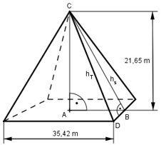

Aufgabe 228 Die quadratische Pyramide vor dem Louvre in Paris ist 21,65 m hoch und hat eine Grundseite von 35,42 m. Wie lang ist eine Stahlstrebe, die die Seitenflächen miteinander verbindet? Wie schwer ist die Glasabdeckung, sie besteht aus 603 Rauten mit Diagonalen von 3 m und 1,9 m und 70 halb so großen Dreiecken, wenn 1 m3 des 21 mm dicken Glases 2,5 t wiegt?

Höhe hs einer Seitenfläche: Satz von Pythagoras im Dreieck ABC: AB = 35,42 m/2 = 17,71 m hs2 = AB2 + AC2 hs2 = 17,712 m2 + 21,652 m2 = 782,4 m2 |√ hs = 28 m Länge hT der Stahlstrebe: Satz von Pythagoras im Dreieck DBC: DB = 35,42 m/2 = 17,71 m hT2 = DB2 + BC2 hT2 = 17,712 m2 + 282 m2 = 1 097,6 m2 |√ hT = 33,1 m Fläche der 603 Rauten: 3 m * 1,9 m 603 * -------------- = 1 718,6 m2 2 Fläche der 70 Dreiecke: 1,5 m * 1,9 m 70 * ---------------- = 99,8 m2 2 21 mm = 0,021 m V = (1 718,6 m2 + 99,8 m2) * 0,021 m = 38,2 m3 m = 38,2 m3 * 2,5 t/m3 = 95,5 t